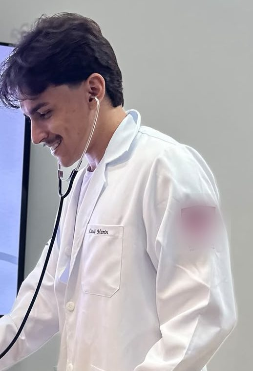

Quem faz o Transfermed

Sou Cauã Marin, estudante do 7º período de Medicina na Universidade Brasil, em Fernandópolis/SP.
Comecei a faculdade de Medicina no Paraguai. Foi um caminho com muitas adversidades: no meu primeiro ano de curso, perdi meu pai. Isso não me fez desistir. Segui em frente e consegui transferir meu curso para o Brasil.
Nesse processo, entendi o quanto a informação sobre transferência é espalhada, confusa e fácil de perder. Daí surgiu a vontade de ajudar outras pessoas a não passarem pelo que eu passei. Comecei orientando estudantes em uma consultoria e, hoje, criei o Transfermed.
O Transfermed ajuda quem estuda no exterior a encontrar o melhor caminho de volta ao Brasil, e também quem já estuda aqui a descobrir para onde pode transferir, quando e o que precisa.
Como funciona
Cada informação vem do PDF oficial do edital, com a página de onde saiu. Um robô visita os sites das faculdades todos os dias. Quando algo muda ou se contradiz, aparece com aviso até ser revisado.
Independência
Nenhuma faculdade paga para aparecer ou mudar de posição. Estudo na Universidade Brasil, e ela aparece aqui com o mesmo critério das outras. Também ofereço consultoria individual, que é separada do site e não influencia nenhum dado publicado.
O que o site não faz
Não garante vaga e não decide aproveitamento de matérias: quem decide é sempre a faculdade.
Fale comigo
Achou um erro, tem uma dúvida ou quer conversar sobre consultoria individual? Escreva aqui.